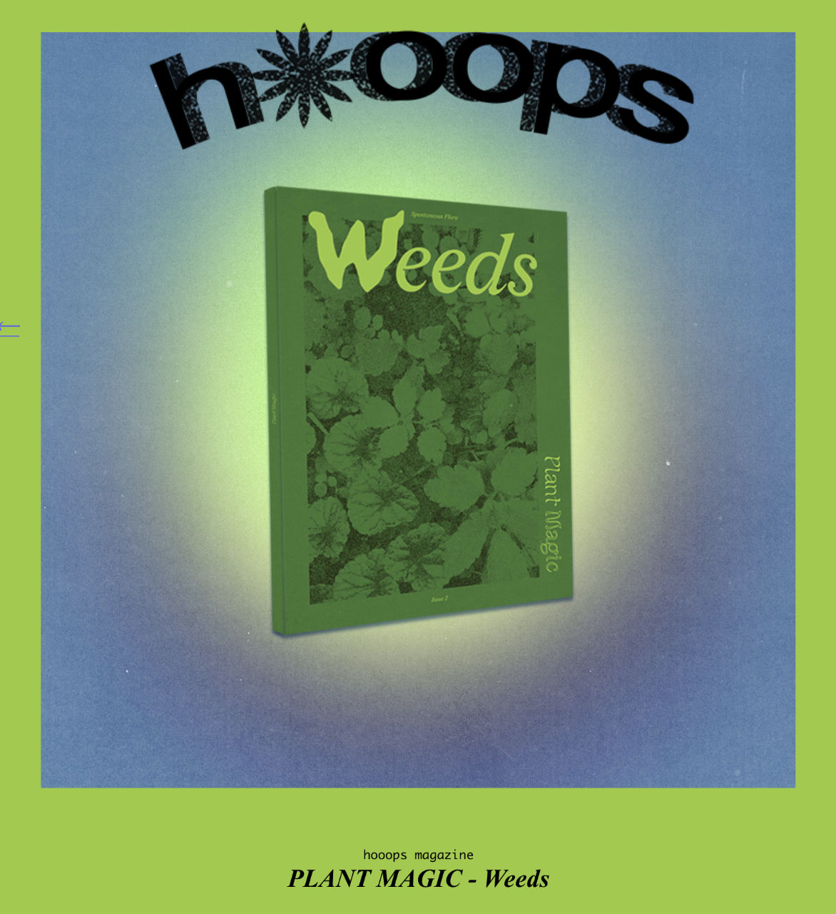
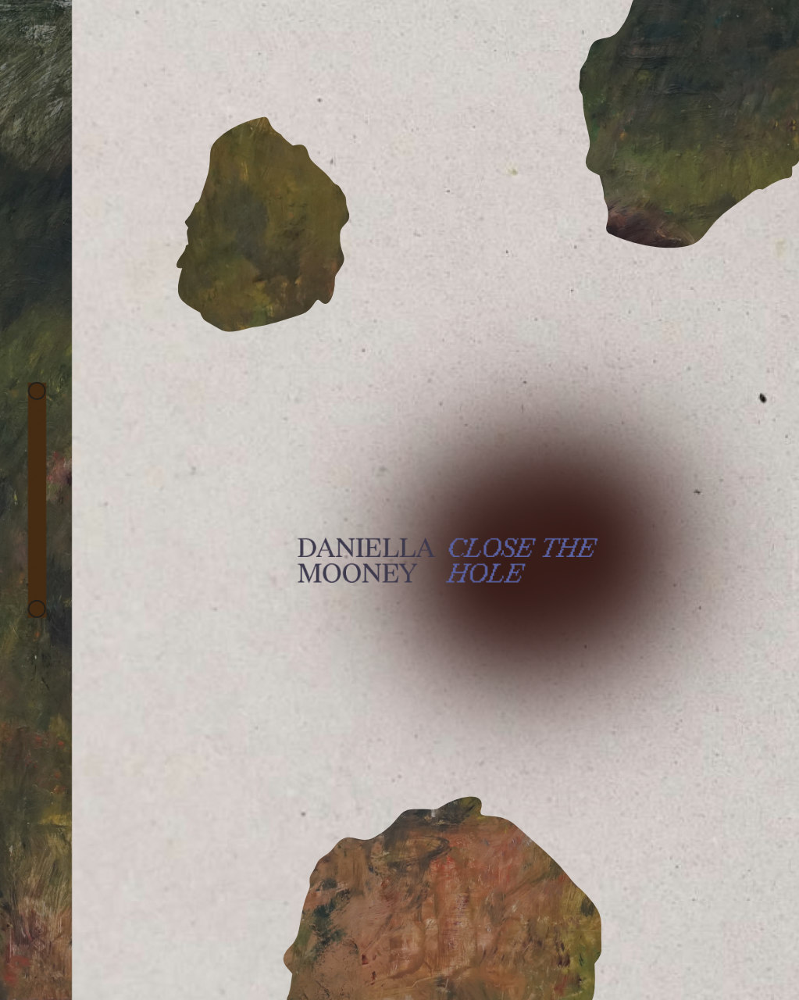

Hooops publications

The second issue of Plant Magic brings together a range of artistic perspectives that explore the complex, resilient, and sometimes contradictory existence of spontaneous vegetation, which is referred to as “weeds”. Weeds embody ambivalence and resistance, thriving in the cracks of crumbling worlds and wastelands. They whisper secrets of life that refuses to give up, of beauty that insists on being seen, of healing that happens stubbornly, even in the poorest of soils. Spontaneous flora reminds us that survival goes beyond mere endurance and becomes an art of thriving against the odds. They dare us to look beyond the obvious, to queer the gaze, and unearth worth in what is so often overlooked.
